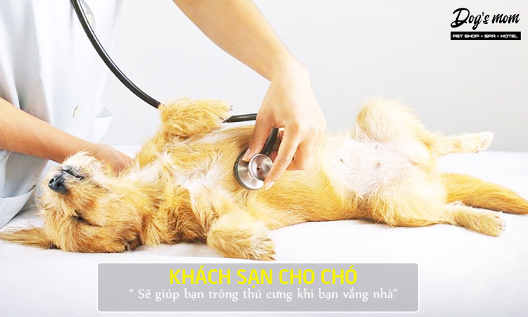
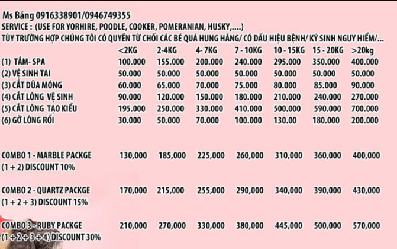
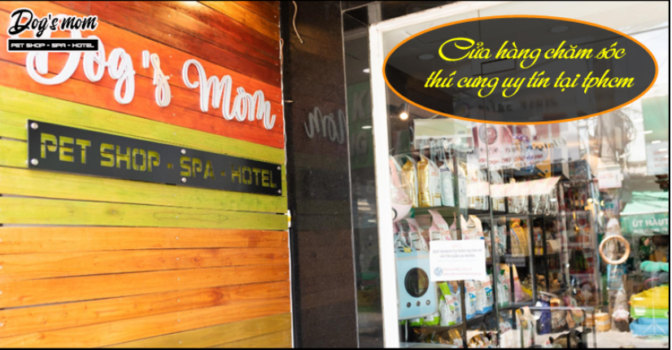

Ngày nay thú cưng được xem là những người bạn đồng hành trong gia đình, chúng luôn được cưng chiều và chăm sóc cả về sức khỏe lẫn tinh thần. Sau đây là một số dịch vụ chăm sóc thú cưng phổ biến hiện nay:
a) Dịch vụ cắt tỉa lông cho chó mèo
Việc cắt tỉa lông cho chó mèo là một việc quan trọng bởi chúng thường xuyên vận động, chạy nhảy nhiều, bộ lông cần chăm sóc, cắt tỉa cẩn thân để mang lại sự thoải mái, tránh bụi bẩn cũng như nấm mốc, các bệnh về da…
Đối với những chú chó có bộ lông dày, rậm như Poodle, chó nhật lông xù… càng phải được cắt tỉa và tắm gội thường xuyên để không tạo điều kiện cho ký sinh trùng phát triển. Bên cạnh đó cũng loại bỏ những phần lông chết, phần lông không cần thiết.
Để cho thú cưng của bạn sạch sẽ, thơm tho và luôn gọn gàng với “kiểu tóc” đẹp bạn nên sắp xếp thời gian để cắt tỉa lông cho chúng thường xuyên. Có thể 1 lần/ 1 tuần.
Nếu bạn quá bận rộn hoặc chưa biết cách cắt tỉa lông cho chó mèo thì nên sử dụng dịch vụ cắt tỉa lông để vừa đảm bảo an toàn, vừa mang lại một diện mạo đẹp cho chúng. Giá dịch vụ cắt tỉa lông cho chó mèo dao động khoảng 200.000VNĐ - 1.500.000VNĐ cho một lần cắt, tùy theo giống chó cũng như dịch vụ sử dụng.
b) Dịch vụ tắm cho chó mèo
Dịch vụ tắm cho thú cưng ngày nay cũng được sử dụng phổ biến, đặc biệt đối với những gia chủ quá bận rộn, không có nhiều thời gian để tắm rửa và chăm sóc chúng. Hoặc đối với những chú chó, mèo dễ mẫn cảm với các loại dầu gội, sữa tắm cần sự hỗ trợ của nhân viên hoặc các bác sĩ thú y.
Giá dịch vụ tắm cho chó mèo hiện nay giao động trong khoảng từ 100.000VNĐ – 600.000VNĐ tùy theo cân nặng, giống chó, mèo mà bạn đang nuôi
c) Dịch vụ khách sạn thú cưng
Dịch vụ khách sạn thú cưng giúp bạn không còn lo lắng và suy nghĩ phải gửi chó mèo cho ai chăm khi phải đi công tác đột xuất hoặc đi du lịch cùng gia đình và không ai chăm sóc.

Hiện nay, khách sạn thú cưng được đầu tư khá công phu và chất lượng, kèm theo đó thú cưng của bạn sẽ được chăm sóc, tắm rửa, ăn uống một cách thoải mái như ở nhà của bạn. Chính vì thế, dịch vụ khách sạn thú cưng ngày càng được yêu thích và chọn lựa sử dụng nhiều.
Giá dịch vụ khách sạn thú cưng hiện nay giao động trong khoảng từ 300.000VNĐ – 500.000VNĐ tùy vào trọng lượng của thú cưng.
d) Dịch vụ dinh dưỡng thú cưng
Dinh dưỡng, thức ăn, chế độ ăn uống là những yếu tố ảnh hưởng trực tiếp đến quá trình phát triển của thú cưng. Vì thế bạn cần lưu ý để tránh xảy ra các bệnh về tiêu hóa, béo phì,… hoặc ảnh hưởng đến sức khỏe, sự chậm phát triển của chúng.
Dịch vụ tư vấn dinh dưỡng thú cưng sẽ giúp bạn hoàn toàn yên tâm và không còn lo ngại gì về vấn đề này, đặc biệt là chế độ ăn uống cân bằng, phù hợp với từng độ tuổi, từng giai đoạn phát triển cũng như thể trạng của thú cưng.
Bạn có thể kết hợp với các dịch vụ khám sức khỏe định kỳ cùng với dịch vụ dinh dưỡng thú cưng để những chú chó mèo được chăm sóc một cách toàn diện nhất.
e) Dịch vụ cứu hộ thú cưng
Dịch vụ cứu hộ thú cưng là một trong những dịch vụ thiết yếu ngày nay giúp hỗ trợ, cứu hỗ những chú chó mèo gặp phải những sự cố, những tai nạn trong cuộc sống.
Ngoài những trung tâm cứu hộ thú cưng, hiện nay các cơ sở cung cấp dịch vụ thú cưng cũng khá phổ biến nhằm mang lại những tiện ích: hỗ trợ kịp thời, nhanh chóng nhất cho thú cưng khi gặp sự cố, đội ngũ bác sĩ, hệ thống máy móc đầy đủ…
Khi thú cưng gặp nạn, hãy tìm những cơ sở cung cấp dịch vụ cứu hộ gần nhất để được hỗ trợ nhanh nhất nhé.
4. Bảng giá dịch vụ chăm sóc thú cưng

5. Cửa hàng chăm sóc thú cưng uy tín tại tphcm
Pet Shop à một trong những hàng chăm sóc thú cưng tại tphcm , uy tín và chất lượng được rất nhiều khách hàng yêu thích và lựa chọn. Với đội ngũ nhân viên, bác sĩ giàu kinh nghiệm, lành nghề, nhiệt tình và có tâm với việc chăm sóc thú cưng, Dog’s Mom mang luôn mang đến những trải nghiệm tốt nhất cho chó mèo nhà bạn.

Địa chỉ: Shop - 620 Lũy Bán Bích, phường Tân Thành, quận Tân Phú , TPHCM
Cơ sở 2: 63 Xóm Củi, p11, quận 8, TPHCM
Hotline/Zalo/Viber : 0916338901